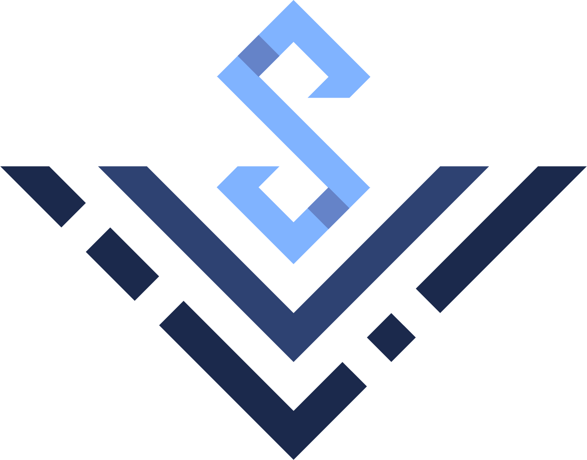

<ion-header fxLayout="row" fxLayoutAlign="space-between center">
  <div class="header-text" fxLayout="row" fxLayoutAlign="center center">
     <ion-text>SpaceFlights</ion-text>
  </div>
  <div fxHide.xs fxLayout="row" fxLayoutAlign="center center">
    <ng-container *ngTemplateOutlet="navLinks"> </ng-container>
  </div>
  <ion-icon
    fxHide.gt-xs
    class="menu-icon"
    (click)="openMenu()"
    name="menu"
  ></ion-icon>
</ion-header>

<ion-menu side="end" menuId="main" contentId="main">
  <div fxLayout="column" fxLayoutAlign="start">
    <ng-container *ngTemplateOutlet="navLinks"> </ng-container>
  </div>
</ion-menu>
<ng-template #navLinks
  ><div
    fxLayout="row"
    fxLayoutAlign="center center"
    class="nav-link"
    [routerLink]="['/articles']"
    routerLinkActive="router-link-active"
    (click)="closeMenu()"
  >
    <ion-icon name="list"></ion-icon>
    Articles
  </div>
  <div
    fxLayout="row"
    fxLayoutAlign="center center"
    class="nav-link"
    [routerLink]="['/favourites']"
    routerLinkActive="router-link-active"
    (click)="closeMenu()"
  >
    <ion-icon name="star"></ion-icon>
    Favourites
  </div></ng-template
>
